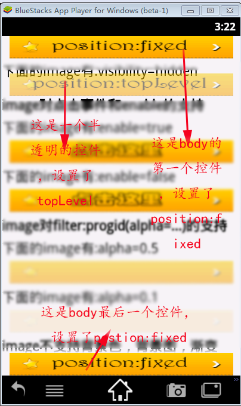
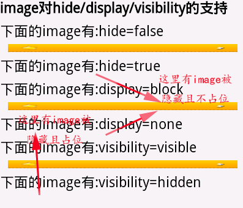
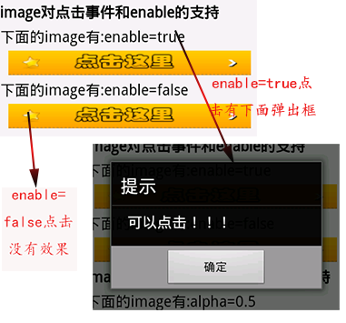

- Introduction
- 1. EMP5.4技术白皮书
- 2. EMP 安全
- 3. Release Note
- 4. EMP产品已知问题列表
-
5.
EMP界面开发规范
- 5.1. 变更记录
- 5.2. FAQ
- 5.3. CSS样式
- 5.4. 属性
-
5.5.
界面标签
- 5.5.1. 控件支持属性和样式对照表
-
5.5.2.
基础标签
- 5.5.2.1. A
- 5.5.2.2. B & Strong
- 5.5.2.3. Body
- 5.5.2.4. Br
- 5.5.2.5. Div
- 5.5.2.6. Form
- 5.5.2.7. I & Em
- 5.5.2.8. Img
- 5.5.2.9. InputButton
- 5.5.2.10. InputCheckbox
- 5.5.2.11. InputHidden
- 5.5.2.12. InputPassword
- 5.5.2.13. InputRadio
- 5.5.2.14. InputSegment
- 5.5.2.15. InputSwitch
- 5.5.2.16. InputText
- 5.5.2.17. Label
- 5.5.2.18. Richtext
- 5.5.2.19. Select & Option
- 5.5.2.20. Table & Tr & Td & Th
- 5.5.2.21. Webview
- 5.5.3. SDK定制说明
- 5.5.4. 定制标签
- 5.6. 布局与刷新
-
5.7.
Lua
-
5.7.1.
基础Lua库
- 5.7.1.1. accelerometer
- 5.7.1.2. audio
- 5.7.1.3. corp
- 5.7.1.4. database
- 5.7.1.5. document
- 5.7.1.6. file
- 5.7.1.7. gesture
- 5.7.1.8. gps
- 5.7.1.9. history
- 5.7.1.10. http
- 5.7.1.11. json
- 5.7.1.12. kv
- 5.7.1.13. location
- 5.7.1.14. offline
- 5.7.1.15. qrcode
- 5.7.1.16. screen
- 5.7.1.17. system
- 5.7.1.18. timer
- 5.7.1.19. tls
- 5.7.1.20. utility
- 5.7.1.21. video
- 5.7.1.22. window
- 5.7.2. 界面标签支持的Lua接口
- 5.7.3. 动画
- 5.7.4. RYTL脚本库
-
5.7.1.
基础Lua库
- 5.8. javascript
- 5.9. 事件
- 6. EMP开发配置
- 7. Migrate
- 8. EWP5.4管理后台功能说明文档
- 9. EWP API
-
10. EWP DEMO
- 10.1. redis缓存示例
- 10.2. redis数据存储示例
- 11. EWP Manual
- Published using GitBook
Image
1 功能说明
该标签主要用于展示图片。
注意：在使用该标签的时候样式中最好指定width&height,详情参见测试用例#width&height部分。
例：<img src="…">
2 属性
全局属性以及具体说明参见属性介绍
2.1 autoplay
指定gif图片是否自动播放
@value string true/false
@default true
2.2 delay
指定按钮点击的延时时间
2.3 enable
指定控件是否可以点击
@value string true/false
@default true
2.4 failed
指定img控件图片加载失败时的显示图片
@value string 图片路径,value格式同img的src属性.
@see loading
2.5 istap
指定是否需要支持点击暂停或播放
@value string true/false
@default true
注:
- 如果设置了初始化后不默认播放,即autoplay=false,那此时设置istap无效,istap恒等于true,否则无法启动gif动画,gif将变得没有意义.
- 如果设置了istap=true,那将不会响应img控件的onclick属性.
- 如果所选gif图片本身无loopCount,则设置loopCount为0,循环播放,否则以实际loopCount属性设置.
2.6 loading
指定img控件图片加载过程中的加载图片
@value string 图片路径,value格式同img的src属性
@see failed
2.7 src
指定资源链接地址
@format1 local:image.png（加载本地资源，这里兼容没有local关键字的情况）
@format2 http:// | https:// | ewp_local://（加载网络资源）
@format3 format2?w=100&h=30（加载网络资源时可以另外指定w,h两个参数）
@format4 gif图片,格式同上三种,如果设置图片为gif图片的话,可以通过设置class.xml里面的属性autoplay(是否设置默认播放)及istap(是否支持点击暂停或继续).也可通过lua报文中img标签的属性来设置.
3 样式
全局样式以及具体说明参见 * 样式介绍
3.1 filter
不支持渐变背景色，只支持透明度
@format progid(alpha='0.5')
3.2 height
指定控件高度
@default 30px
3.3 width
指定控件宽度
@default 30px
4 事件
4.1 onclick
指定图片的点击事件
5 Examples
示例代码地址：image.xml
5.1 position
代码片段1:css
<style>
.father{width:300px;height:30px;left:10px;}
.positionFixed{position:fixed;}
.positionToplevel{position:toplevel;top:50px;left:10px;filter:progid(alpha='0.5');}
...
</style>
代码片段2:页面
<body>
<!-- position:fixed:body的第一个控件，强制top=0 -->
<img src="local:a_fixed.png" class='father,positionFixed'></img>
<!-- positon:toplevel -->
<img src="local:a_toplevel.png" class='father,filter5,positionToplevel' ></img>
...
<!-- position:fixed:body的最后一个控件,强制bottom=0 -->
<img src="local:a_fixed.png" class='father,positionFixed' ></img>
<body>
效果图:

5.2 display&hide&visibilidy
代码片段1:css
<style>
.father_lit{width:300px;height:10px;left:10px;}
.display1{display:none;}
.display2{display:block;}
.visibility1{visibility:visible;}
.visibility2{visibility:hidden;}
...
</style>
代码片段2:页面
<body>
<b>image对hide/display/visibility的支持</b><br/>
<!-- hide -->
<label>下面的image有:hide=false</label><br/>
<img hide='false' src="local:a.png" class='father_lit' ></img>
<label>下面的image有:hide=true</label><br/>
<img hide='true' src="local:a.png" class='father_lit' ></img>
<!-- diaplay -->
<label>下面的image有:display=block</label><br/>
<img src="local:a.png" class='father_lit,display2' ></img>
<label>下面的image有:display=none</label><br/>
<img src="local:a.png" class='father_lit,display1' ></img>
<!-- visibility -->
<label>下面的image有:visibility=visible</label><br/>
<img src="local:a.png" class='father_lit,visibility1' ></img>
<label>下面的image有:visibility=hidden</label><br/>
<img src="local:a.png" class='father_lit,visibility2' ></img>
...
<body>
效果图:

5.3 enable&onclick
代码片段1:css
<style>
.father{width:300px;height:30px;left:10px;}
...
</style>
代码片段2:lua
function click()
window:alert("可以点击！！！")
end;
代码片段3:页面
<body>
<!-- enable and onclick事件 -->
<b>image对点击事件和enable的支持</b><br/>
<label>下面的image有:enable=true</label><br/>
<img src="local:a_click.png" class='father' onclick="click()" enable='true'></img>
<label>下面的image有:enable=false</label><br/>
<img src="local:a_click.png" class='father' onclick="click()" enable='false'></img>
<body>
效果图:

5.4 filter-alpha
代码片段1:css
<style>
.father{width:300px;height:30px;left:10px;}
.filter5{filter:progid(alpha='0.5');}
.filter1{filter:progid(alpha='0.1');}
...
</style>
代码片段2:页面
<body>
<!-- filter:image只支持alpha -->
<b>image对filter:progid(alpha=...)的支持</b><br/>
<label>下面的image有:alpha=0.5</label><br/>
<img src="local:a.png" class='father,filter5' ></img>
<label>下面的image有:alpha=0.1</label><br/>
<img src="local:a.png" class='father,filter1' ></img>
<body>
效果图:

5.5 不支持background-image&background-color&渐变色
代码片段1:css
<style>
.father{width:300px;height:30px;left:10px;}
.background_color {background-color:#FFFF00;}
.background_image {background-image:url(a_click.png);}
.filter{filter:progid(startColorStr='#FFFF00',endColorStr='#ff0000',gradientType='1',alpha='0.5');}
...
</style>
代码片段2:页面
<body>
<!-- 不支持背景色，背景图，渐变色 -->
<b>image不支持背景色，背景图，渐变色，下面三张应该显示图片a.png,第三张透明度不起作用</b><br/>
<img src="local:a.png" class='father,background_color' ></img>
<img src="local:a.png" class='father,background_image' ></img>
<img src="local:a.png" class='father,filter' ></img>
<body>
效果图:
5.6 加载网络图片：src格式
代码片段1:css
<style>
.father_net{width:100px;height:20px;left:10px;}
...
</style>
代码片段1:页面
<body>
<b>下面测试的是src加载网络图片，需要联网调试</b>
<br/>
<!-- img:src -->
<img class="father_net" src="http://2f.zol-img.com.cn/product/89/695/ceMVrsqeDKqY.png"/>
<img class="father_net" src="https://192.168.64.128/emas/Btnota.jpg"/>
<img class="father_net" src="ewp_local://Btnota.jpg" />
<!-- img:src with w,h-->
<img class="father_net" src="http://2f.zol-img.com.cn/product/89/695/ceMVrsqeDKqY.png?w=200&h=30"/>
<img class="father_net" src="https://192.168.64.128/emas/Btnota.jpg?w=200&h=30"/>
<img class="father_net" src="ewp_local://Btnota.jpg?w=200&h=30" />
<body>
效果图:
5.7 width&height
代码片段1:页面
<body>
<b>下面测试的是src加载两张没有给定宽高的图片</b>
<br/>
<img src="local:a.png" /><br/>
<img src="ewp_local://Btnota.jpg" />
<body>
效果图:
在使用该标签的时候样式中最好指定width,height。
如果没有指定width,height
1.对于网络图片，如果src包含参数，则取参数w,h作为图片的显示宽高 。
2.对于本地图片或者src中未包含w,h参数的图片，取图片的原像素作为图片显示的宽高
对于上述的两种情况
情况1只是客户端做的兼容，这种写法并不被鼓励。更规范的写法是css中指定width,height。
情况2时，由于图片加载和控件绘制是异步的，如果控件绘制时图片仍未加载成功，会导致图片宽高为Image控件配置的宽高(参见#各平台对控件默认宽高的配置)而不是图片本身的宽高。
所以有时上面未指定宽高的图片会显示如下，而不是按照图片本身大小显示。这种情况多发生在第一次加载该图片的时候。
5.8 loading&failed
代码片段1:css
<style>
.father_load {left:10px;height:85px;width:150px;}
...
</style>
代码片段2:页面
<body>
<label>下面是张网络图片，图片存在能正确加载，先显示指定的正在加载图片，最后显示加载到的图片</label>
<br/>
<img class="father_load" loading="local:loading.png" failed ="local:loadfailed.png" src="http://2f.zol-img.com.cn/product/89/695/ceMVrsqeDKqY.png"/>
<br/>
<label>下面这张网络图片路径不正确，不能正确加载，先显示指定的正在加载图片，最后显示指定的加载失败图片</label>
<br/>
<img class="father_load" loading="local:loading.png" failed ="local:loadfailed.png" src="http://2f.zol-img.com.cn/product/89/695/ceMVrsqeDKqY1.png"/>
<body>
效果图:
- 第一个img控件效果如下:
先显示指定的加载图片:
最后显示加载到的网络图片:
- 第二个img控件效果如下:
先显示指定的加载图片:
最后显示指定的加载失败的图片:

| Date | Note | Modifier |
|---|---|---|
| 2015-04-08 | 增加属性loading,failed | lin.jitao |
| 2015-04-09 | 增加src为gif图片的说明 | lv.teyan |
| 2015-08-05 | 增加loading,failed示例 | bi.jiao |
| 2015-11-30 | 增加delay属性支持 | zhou.changjin |
| 2015-12-23 | 补充默认宽高说明 | zhou.changjin |